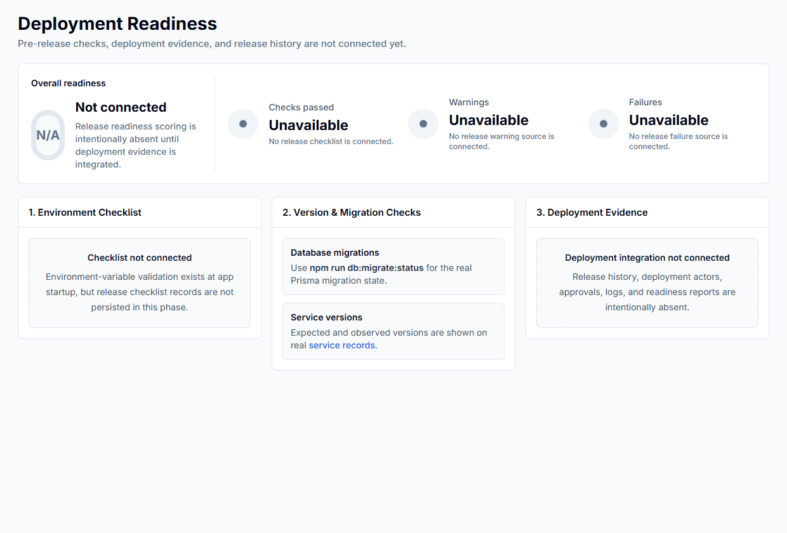
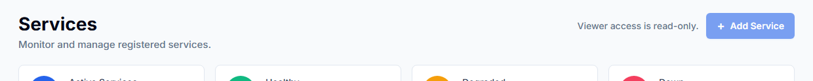

Generated for user review only. No PDF, upload, or publish action performed.
Readiness page showing unavailable deployment integrations and explicit scope boundaries.

Viewer services header showing read-only state and unavailable Add Service mutation action.
